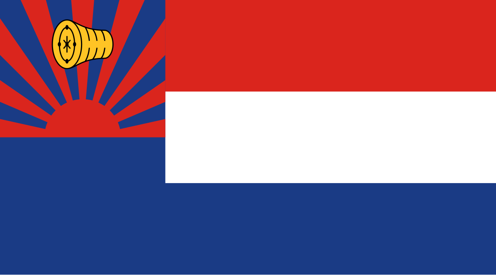

Karen National Flag
|
The Karen National Flag was created in 1937. It was a result of a competition held by Karen leaders attempting to create the flag. The Karen flag is often used in special celebrations and occasions such as Karen New year, Wrist Tying Ceremony, Karen Revolution Day, Karen Martyr Day, and public meetings. The flag is proudly raised by Karen people as each color and symbol holds a specific meaning. Year of creation: 1937 Used in special celebrations and occasions such as:
|
 [The Karen National Flag] |